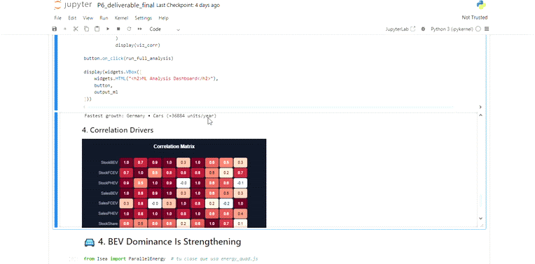

Our Interactive Visualizations
This project features two primary, coordinated visualizations designed to provide a comprehensive overview of the global EV transition, from a high-level geographic perspective to a detailed diagnostic analysis.
1. Global Adoption & Infrastructure Map
The world map provides a geographic overview of electric vehicle adoption and charging infrastructure. It serves as the main entry point for exploring the dataset, allowing you to quickly identify regional trends and outliers.

Key Features
- Metric Selection: You can switch between several key metrics to color the map, including:
- EV Stock Share: The proportion of the national fleet that is electric.
- EV Sales Share: The proportion of new vehicle sales that are electric.
- Charging Infrastructure: The total number of public charging points.
- Interactive Time Series: Clicking on a country displays its entire historical trajectory for the selected metric in the time-series line chart below the map.
Analytical Purpose
This view helps you answer high-level questions such as: - Which regions are the clear early adopters (e.g., Nordics, China)? - Which countries are showing rapid growth in recent years? - Are there regions where charging infrastructure is lagging behind adoption rates? - Can we spot any outliers that deviate significantly from their neighbors?
2. Transition Dynamics Scatter Plot
This interactive scatter plot is a powerful diagnostic tool for revealing the current behavior and dynamics of the EV transition within selected countries and vehicle modes.

Key Features
- Dynamic Axes: Choose any two metrics to plot against each other for comparative analysis.
- Time Slider: Animate the plot over time to see how different regions and modes have evolved.
- Brushing and Linking: Select a group of data points by clicking and dragging. A second, linked scatter plot will appear below, showing only your selected data for focused analysis.
- Legend Filtering: Click on items in the legend (e.g., "Buses", "Vans") to toggle their visibility on the plot.
- Analytical Overlays: Buttons to add a
y=xdiagonal line, normalize axes to a 0-100 scale, and lock the zoom level for consistent year-over-year comparison.
Analytical Purpose
This tool is designed for deep-dive analysis. For step-by-step guides on how to use it to answer specific research questions, please see our tutorials:
3. Bubble Chart
The bubble chart allows you to explore relationships between three continuous variables simultaneously, using position and size encoding.

Key Features
- Three-Dimensional Encoding: X-axis, Y-axis, and bubble radius each represent a different metric.
- Color-Coded Groups: Bubbles are colored by category (e.g., continent, vehicle type) for pattern identification.
- Interactive Tooltips: Hover over any bubble to see detailed information for that entity.
Analytical Purpose
This view helps you answer questions such as: - Which countries have high EV sales but low market penetration? - Are there regional clusters in adoption patterns? - Which outliers are performing above or below expectations?
4. Correlation Heatmap
The heatmap visualizes relationships and correlations between multiple variables in a color-coded matrix format.

Key Features
- Color-Coded Matrix: Cell color intensity represents the strength of correlation or value magnitude.
- Flexible Colormaps: Use sequential (
viridis) or diverging (coolwarm) color schemes. - Interactive Tooltips: Hover to see exact values for any cell intersection.
- Value Labels: Numeric values displayed directly on cells for quick reading.
Analytical Purpose
This view helps you answer questions such as: - Which metrics are strongly correlated with EV adoption? - Are there unexpected negative correlations in the data? - How do variables relate to each other across the dataset?
5. Trend Line Chart
The trend line chart combines historical data with forecasts, allowing you to track and compare multiple time series on a single view.

Key Features
- Dual-Line Encoding: Solid lines for historical data, dashed lines for predictions.
- Interactive Legend: Click to toggle series visibility for focused comparisons.
- Hover Crosshair: Vertical line displays all values at the selected year.
- Automatic Scaling: Axes adjust dynamically based on visible series.
Analytical Purpose
This view helps you answer questions such as: - Which countries are leading the EV transition and by how much? - How do growth trajectories differ between early adopters and late entrants? - What do forecasts suggest about future market dynamics? - When might lagging countries catch up to leaders?
Detailed Documentation
For in-depth information on each visualization, including implementation details and code examples:
- World Map & Line Chart: Geographic entry point for global trends.
- Diagnostic Scatter Plot: Core tool for comparative analysis.
- Parallel Coordinates Plot: Multivariate country profile comparison.
- Bubble Chart: Three-variable relationship explorer.
- Correlation Heatmap: Matrix view for correlations and cross-tabulations.
- Trend Line Chart: Historical trends and forecast comparisons.
- Advanced Analysis Panel: On-demand ML toolkit for structural insights.